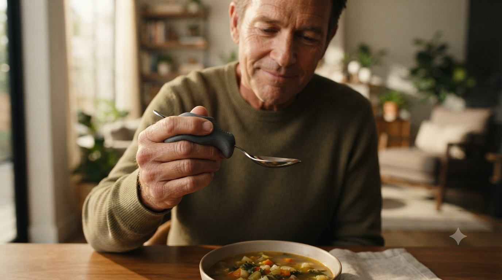

DESIGNED AROUND YOUR EVERYDAY
Small adaptations. More possibilities.
Describe the task. Iyal helps explore, fit, visualize and refine a practical adaptation.

Design assistance only.Generated adaptations need physical fit and manufacturing checks. Iyal.ai does not provide medical advice.